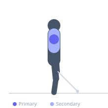
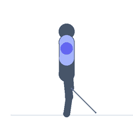

Exercise guide / Leaning Cable Lateral Raise (Foot Forward Stance)
Leaning Cable Lateral Raise (Foot Forward Stance)
The leaning cable lateral raise with foot forward stance uses a split/lunge stance with the same-side foot as the working arm placed forward, stabilizing the lean angle differently than the common same-side foot braced on the cable unit. This stance variation allows a more consistent lean angle throughout the set and provides a stable base from which to isolate the lateral deltoid through a fuller range than the standard leaning version.
Primary muscles
deltoid lateral
Secondary muscles
trapezius upper
Stabilizers
erector spinae
Equipment
Cable Machine (High Pulley)


Starting position
- Stand beside a low cable pulley. Take a split stance — the foot closer to the cable goes forward. Hold the low cable handle with the far hand, leaning slightly away from the cable.
Setup
- Foot forward on the working-arm side provides stable counterbalance to the lean. Set the cable to the lowest position.
Steps
- Step 1: Establish the split-stance lean, working hand holding the cable below hip level.
- Step 2: Raise the working arm out and up to shoulder height.
- Step 3: Hold 1 second at the top.
- Step 4: Lower under full control.
- Step 5: Complete all reps then switch sides.
Coaching cues
- Lean is set before you start — don't drift
- Raise to shoulder height — stop there
- Elbow leads the movement
Breathing
- Exhale raising. Inhale lowering.
Range of motion
- Arm at side to shoulder height.
Tempo
- 2-1-2-0
Common mistakes
- Shifting the torso during the raise — the lean angle is fixed
- Using the non-working hand to assist balance inappropriately
Safety
- Light load — isolation exercise for medial deltoid development
- Ensure the foot placement gives stable balance before beginning
Training
- hypertrophy: 12–20 reps
- hypertrophy: 3–4 sets
- Rest: {'hypertrophy': 60}